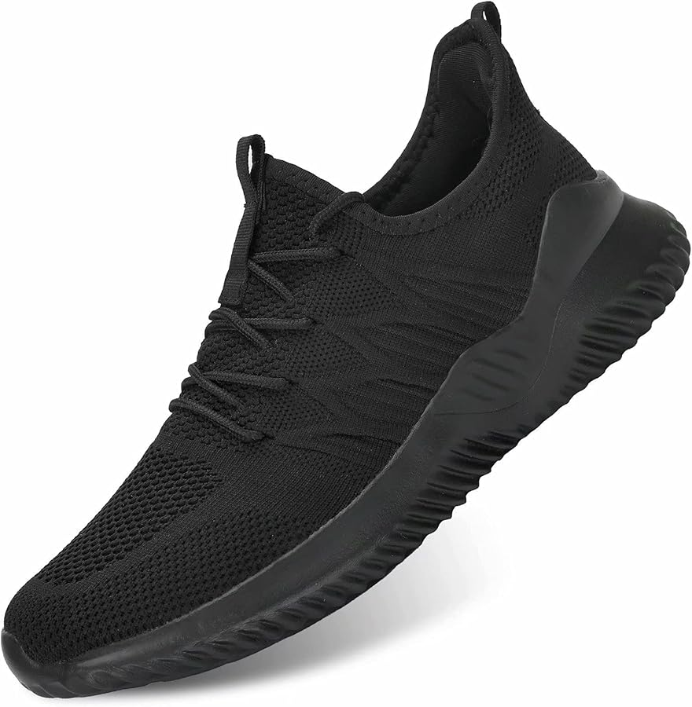

Βρειτε τωρα νεες απιστευτες προσφορες μονο στο Stefs clothes
Λιγα λογια για την εταιρια μας:
Ποιότητα Υλικών: Η Stefs Clothes δίνει έμφαση στη χρήση υψηλής ποιότητας υφασμάτων και πρώτων υλών που κάνουν τα ρούχα της πιο ανθεκτικά και άνετα. Η επιχείρηση συνεργάζεται με αξιόπιστους προμηθευτές, επιλέγοντας υλικά που ανταποκρίνονται σε υψηλά πρότυπα αντοχής και αισθητικής. Αυτό διασφαλίζει ότι τα προϊόντα δεν χάνουν το σχήμα ή το χρώμα τους με την πάροδο του χρόνου, κάτι που προσφέρει πραγματική αξία στον πελάτη. Η επένδυση στην ποιότητα σημαίνει ότι τα ρούχα έχουν μεγαλύτερη διάρκεια ζωής, κάτι που βοηθά τον πελάτη να εμπιστεύεται την επιλογή του.
Στυλ και Σχεδίαση: Η Stefs Clothes δίνει έμφαση στη δημιουργικότητα και ακολουθεί τις τελευταίες τάσεις της μόδας, προσφέροντας φρέσκα και καινοτόμα σχέδια. Το σχεδιαστικό της τμήμα δημιουργεί ρούχα που ξεχωρίζουν για την αισθητική τους, επιδιώκοντας να καλύψει τις προτιμήσεις όλων των ηλικιακών ομάδων και των διαφορετικών στυλ. Από casual κομμάτια μέχρι πιο επίσημες ενδυματολογικές επιλογές, η επιχείρηση καταφέρνει να ανταποκρίνεται σε κάθε στυλ και περίσταση, κάτι που προσθέτει στη δυναμική της ως μάρκα με ευρύ φάσμα επιλογών.

Μαυρα παπουτσια με φανταχτερα φτερα απο 52.99ΜΟΝΟ 42.99
Εξαιρετική Εξυπηρέτηση Πελατών: Η Stefs Clothes δίνει ιδιαίτερη βαρύτητα στην εμπειρία του πελάτη. Οι πελάτες νιώθουν ότι εξυπηρετούνται φιλικά και άμεσα, ενώ οι υπάλληλοι είναι έτοιμοι να βοηθήσουν με κάθε απορία ή προβληματισμό τους, είτε πρόκειται για βοήθεια στην επιλογή ρούχων είτε για πληροφορίες σχετικές με την παραγγελία τους. Η προσήλωση στην εξυπηρέτηση δημιουργεί μια αίσθηση εμπιστοσύνης και αφοσίωσης από την πλευρά του πελάτη, ο οποίος είναι πιο πιθανό να επιστρέψει για μελλοντικές αγορές.
Προσιτές Τιμές και Συχνές Προσφορές: Παρά την υψηλή ποιότητα των προϊόντων, η Stefs Clothes προσφέρει ανταγωνιστικές τιμές, κάνοντας τα προϊόντα της προσιτά σε ευρύτερο κοινό. Επιπλέον, με συχνές εκπτώσεις και προσφορές, οι πελάτες έχουν τη δυνατότητα να αποκτήσουν ποιοτικά κομμάτια σε ακόμα χαμηλότερες τιμές, κάτι που ενισχύει την ελκυστικότητα της επιχείρησης. Αυτή η στρατηγική ενισχύει την πίστη των πελατών και τους προσελκύει να επιστρέφουν, αφού νιώθουν ότι εξασφαλίζουν εξαιρετική αξία για τα χρήματά τους.
Ποικιλία Μεγεθών και Inclusivity: Στην Stefs Clothes υπάρχει ποικιλία μεγεθών που καλύπτει όλες τις αναλογίες. Προσφέροντας επιλογές για κάθε σωματότυπο, η επιχείρηση προωθεί την έννοια της «inclusive fashion», δείχνοντας σεβασμό προς τις ανάγκες και τις ιδιαιτερότητες όλων των πελατών. Αυτή η προσέγγιση βοηθά την επιχείρηση να προσεγγίσει μια ευρύτερη πελατειακή βάση και δείχνει ότι σέβεται τη διαφορετικότητα, κάτι που αποτελεί ισχυρό κίνητρο για τους πελάτες να επιλέξουν την Stefs Clothes.